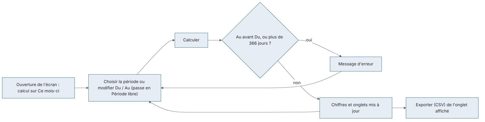

Pilotage, statistiques et relations
Ce chapitre couvre les écrans de suivi de l'activité et de la relation avec les prescripteurs, les partenaires et les patients : Statistiques, Pilotage (en haut du menu), puis le groupe RELATIONS : Statistiques prescripteurs, Visites et conventions, Rappels et enquêtes.
Les écrans de ce chapitre (sauf Rappels et enquêtes pour les envois) ne modifient aucun dossier patient : ils lisent l'activité et la présentent.
Vue d'ensemble :

Barre de période (commune) :

Barre de période commune. Tous ces écrans ont en haut la même barre :
- une liste de période : Ce mois-ci (par défaut), Le mois dernier, Cette année, L'année dernière, Période libre ;
- deux dates Du et Au (modifier une date passe automatiquement en Période libre) ;
- un bouton Calculer (sur Visites et conventions il s'appelle Actualiser) ;
- un bouton Exporter (CSV) qui exporte l'onglet affiché dans un fichier CSV (séparateur point-virgule, accents conservés) qui s'ouvre directement dans Excel.
Règles communes : la date de fin ne peut pas précéder la date de début (« La date de fin précède la date de début. ») et la période est limitée à 366 jours (« La période ne peut pas dépasser 366 jours. »). L'écran calcule automatiquement à l'ouverture sur le mois en cours ; après un changement de dates, cliquer Calculer. Un export sur un onglet vide affiche « Aucun élément sélectionné. » (sur Statistiques, il ne se passe simplement rien).
Statistiques
Les chiffres d'activité d'une période pour la revue de direction (ISO 15189) : volumes, délais, montants.
Qui y a accès : droit « consulter les statistiques ». Rôles livrés : Biologiste responsable, Biologiste, Responsable qualité, Comptabilité, Administrateur.
L'écran
- Titre « Statistiques d'activité — jj/mm/aa → jj/mm/aa », barre de période (Calculer, Exporter (CSV)).
- Huit chiffres clés :
| Chiffre | Signification |
|---|---|
| Dossiers | Dossiers enregistrés dans la période ayant au moins une analyse non annulée |
| Patients | Patients distincts de ces dossiers |
| Analyses | Analyses réalisées (non annulées) ; entre parenthèses le nombre d'analyses annulées |
| Délai réception → validation · dans les délais | Délai moyen en heures entre la réception de l'échantillon et la validation biologique, puis le % d'analyses validées avant l'heure de rendu promise |
| Montant facturable | Somme des prix appliqués aux analyses réalisées |
| Facturé | Factures émises datées dans la période |
| Avoirs | Avoirs émis datés dans la période |
| Encaissé | Règlements encaissés dans la période |
- Quatre onglets :
- Par secteur : Code, Secteur, Analyses, Validées, Délai moyen, Dans les délais, Montant facturable.
- Par analyse : Code, Désignation, Analyses, Délai moyen, Montant facturable.
- Par payeur : Payeur (« Patient payant » quand il n'y a pas d'organisme), Dossiers, Analyses, Montant facturable, Part organisme, Part patient.
- Par jour : Date, Dossiers, Analyses — tous les jours de la période, y compris les jours vides (fermeture, panne).
Scénarios
- Préparer la revue de direction du mois écoulé
- Ouvrir Statistiques.
- Choisir Le mois dernier dans la liste de période.
- Cliquer Calculer.
- Lire les chiffres clés ; ouvrir chaque onglet.
- Pour chaque onglet utile, cliquer Exporter (CSV) et enregistrer le fichier depuis Excel.
- Analyser une période libre (par exemple un trimestre) : modifier Du et Au (la liste passe en Période libre), cliquer Calculer.
- Comparer les secteurs : onglet Par secteur, trié du plus grand nombre d'analyses au plus petit ; repérer les délais moyens élevés et les faibles % Dans les délais.
- Connaître la répartition par organisme : onglet Par payeur, trié par montant décroissant.
- Imprimer un onglet : afficher l'onglet puis Imprimer (Ctrl+P) dans le bandeau.
Règles et contrôles
- Les chiffres portent sur le site de connexion uniquement (pour plusieurs sites, voir Pilotage).
- Une analyse annulée n'est comptée que dans le chiffre « annulées », nulle part ailleurs.
- Un dossier est rattaché au jour de son enregistrement (heure locale du laboratoire).
- Le délai moyen ne compte que les analyses qui ont à la fois une heure de réception et une heure de validation ; « — » s'affiche quand il n'y en a aucune.
- « Montant facturable » (prix des analyses) et « Facturé » (factures émises) peuvent différer : factures non encore émises, factures d'une autre période, remises.
- La déclaration épidémiologique (maladies à déclaration obligatoire) n'existe pas dans cet écran, bien qu'un droit porte ce nom (à vérifier avec l'éditeur).
Flux : écran de lecture. Les fichiers CSV alimentent le rapport de revue de direction ; les écarts de délais renvoient vers Non-conformités si besoin.

Pilotage
Le tableau de bord du directeur sur une période : chiffre d'affaires, marge, créances, masse salariale, qualité et délais, tous sites confondus.
Qui y a accès : droit « pilotage ». Rôles livrés : Biologiste responsable, Administrateur. La tuile de masse salariale demande en plus le droit « salaires » (Biologiste responsable : oui).
L'écran
- Titre « Pilotage — jj/mm/aaaa → jj/mm/aaaa · N site(s) » : tous les sites auxquels votre compte a accès sont additionnés.
- Barre de période (Calculer, Exporter (CSV)).
- Tuiles :
| Tuile | Contenu |
|---|---|
| Chiffre d'affaires | Prix des analyses réalisées · nombre de dossiers |
| Facturé net / encaissé | Factures moins avoirs / règlements encaissés |
| Coût réactifs | Coût réactif estimé des analyses de la période |
| Marge | Chiffre d'affaires moins coût réactifs · % de marge |
| Créances échues / encours | Montant échu (en rouge s'il y en a) / total restant dû |
| Masse salariale / CA | Coût employeur des mois de paie clôturés entièrement compris dans la période · % du chiffre d'affaires de ces mêmes mois. « Aucun mois de paie clôturé sur la période » sinon. Tuile absente sans le droit « salaires ». |
| Délai de rendu moyen | Délai réception → validation · % dans les délais (même calcul que Statistiques) |
| Rejets CQ | Contrôles rejetés / contrôles passés · % |
- Onglets :
- Par jour, Par site, Par payeur, Par prescripteur : Libellé, Dossiers, Analyses, CA (MAD), Part (du chiffre d'affaires). « Patient payant » et « (Sans prescripteur) » regroupent les dossiers sans organisme ou sans prescripteur.
- Créances échues : Ancienneté (Non échu, 1 à 30 jours, 31 à 60 jours, 61 à 90 jours, 91 à 180 jours, Plus de 180 jours), Factures, Montant dû (MAD). Les tranches de plus de 60 jours non nulles sont en rouge.
- Qualité : Résultats de CQ, Rejets CQ, Non-conformités ouvertes, Non-conformités déclarées sur la période, EEQ satisfaisants, EEQ à surveiller, EEQ non satisfaisants, EEQ non rendus, Délai de rendu moyen, Dans les délais.
Scénarios
- Revue mensuelle de direction
- Ouvrir Pilotage, choisir Le mois dernier, cliquer Calculer.
- Lire les tuiles ; contrôler la tuile Créances échues / encours.
- Onglet Créances échues : repérer les tranches en rouge, puis traiter les relances dans Facturation / Tiers payant.
- Onglet Qualité : comparer aux objectifs qualité.
- Exporter chaque onglet utile avec Exporter (CSV).
- Suivre le poids de chaque prescripteur ou organisme : onglets Par prescripteur / Par payeur, triés par CA décroissant.
- Comparer les sites : onglet Par site (seuls les sites autorisés pour votre compte apparaissent).
- Bilan annuel : choisir L'année dernière puis Calculer.
Règles et contrôles
- Le chiffre d'affaires est le prix des analyses non annulées des dossiers enregistrés dans la période ; il peut différer du « Facturé net ».
- Les créances sont calculées à aujourd'hui, quelle que soit la période choisie.
- Le coût réactif et la marge suivent la méthode de l'écran Coût de revient et marge (groupe FINANCES) : analyses sous-traitées exclues.
- Les salaires ne sont jamais montrés à qui n'a pas le droit « salaires ».
Flux : Pilotage → actions dans Facturation / Tiers payant (créances), Non-conformités / Évaluation externe (qualité), Coût de revient et marge (détail par analyse), Statistiques prescripteurs (détail par prescripteur).

Statistiques prescripteurs
Ce que chaque médecin et chaque clinique envoie au laboratoire, et comment cela évolue.
Qui y a accès : droit « relations — consultation ». Rôles livrés : Biologiste responsable, Comptabilité, Administrateur.
L'écran
- Titre « Activité par prescripteur — période (comparé à période précédente) ». La période précédente a la même durée et se termine la veille du début.
- Barre de période (Calculer, Exporter (CSV)).
- Quatre tuiles : Dossiers (avec l'évolution en % vs période précédente), CA (MAD) (idem), Nouveaux prescripteurs, Prescripteurs perdus.
- Six onglets :
- Par prescripteur : Prescripteur, Clinique / établissement, Dossiers, Analyses, CA (MAD), Dossiers période préc., CA période préc., Dossiers vs préc., Dossiers vs N-1, CA vs préc., CA vs N-1. Les nouveaux prescripteurs sont sur fond vert.
- Par clinique / établissement : mêmes colonnes ; « (Cabinet / sans établissement) » regroupe les médecins de ville.
- Par mois : Mois, Dossiers, Analyses, CA (MAD), Dossiers N-1, CA N-1, Évolution vs N-1, Prescripteurs actifs, Nouveaux.
- Nouveaux prescripteurs : ceux qui ont envoyé des dossiers dans la période et aucun dans les 365 jours précédents.
- Prescripteurs perdus : ceux qui avaient envoyé des dossiers dans la période précédente et aucun dans la période ; triés par CA perdu.
- Détail mensuel : Prescripteur, Clinique / établissement, Mois, Dossiers, Analyses, CA (MAD) — pour un export complet.
Scénarios
- Repérer les prescripteurs perdus ce trimestre
- Saisir Du / Au sur le trimestre, cliquer Calculer.
- Onglet Prescripteurs perdus : la liste commence par ceux qui pesaient le plus.
- Planifier une visite dans Visites et conventions (objet « Point sur le service » ou « Réclamation »).
- Accueillir les nouveaux prescripteurs : onglet Nouveaux prescripteurs, puis visite de suivi.
- Comparer à l'année dernière : onglet Par mois, colonnes N-1 et Évolution vs N-1.
- Exporter le détail pour un tableur : onglet Détail mensuel, Exporter (CSV).
Règles et contrôles
- Un dossier compte s'il n'est pas annulé ; ses analyses et son CA sont ceux de ses analyses non annulées, au prix appliqué.
- Tous les sites autorisés pour votre compte sont additionnés.
- « — » dans une évolution signifie qu'il n'y avait rien à comparer (zéro avant).
- « (Sans prescripteur) » regroupe les dossiers sans médecin prescripteur.
Flux : Statistiques prescripteurs → Visites et conventions (visite de suivi) ; complète l'onglet Par prescripteur du Pilotage.

Visites et conventions
Le suivi des visites du délégué chez les prescripteurs et le registre des conventions (cliniques, entreprises, laboratoires partenaires, mutuelles), avec le document signé.
Qui y a accès
- Consultation : droit « relations — consultation » (Biologiste responsable, Comptabilité, Administrateur).
- Création, modification, suppression, pièce jointe : droit « relations — gestion » (Biologiste responsable, Administrateur). Sans ce droit, les boutons correspondants sont masqués ; Ouvrir le document reste disponible.
L'écran
- Titre « Visites et conventions », barre de période (Actualiser, Exporter (CSV)) et, à droite, les boutons de l'onglet affiché.
- Rappel en haut : « Suivi de la relation uniquement : comptes rendus de visite, délais de résultats, réclamations. Aucun contenu promotionnel ni avantage au prescripteur. »
- Onglets :
- Visites (visites dont la date est dans la période) et Visites à prévoir (visites dont la Prochaine visite est arrivée sans qu'une visite plus récente au même prescripteur ait eu lieu) : Date, Prescripteur, Clinique / établissement, Délégué, Objet, Notes, Prochaine visite (en rouge quand elle est due). Boutons : Nouvelle visite, Modifier, Supprimer.
- Conventions et partenariats : Partenaire, Type de partenaire, Type de convention, Référence, Début, Fin, État, Remise convenue (%), Contact, Document. Boutons : Nouvelle convention, Modifier, Joindre le document…, Ouvrir le document, case Afficher les conventions inactives. Une convention qui se termine dans les 60 jours est sur fond orange.
| État d'une convention | Signification |
|---|---|
| En vigueur | Active, la date du jour est entre Début et Fin (ou pas de Fin) |
| Échéance proche | En vigueur et se termine dans 60 jours ou moins : à renouveler |
| Hors période | Active mais pas encore commencée ou déjà terminée |
| Inactive | Case Actif décochée (visible seulement avec Afficher les conventions inactives) |
Scénarios
- Enregistrer une visite chez un prescripteur
- Onglet Visites, cliquer Nouvelle visite.
- Renseigner Date (aujourd'hui par défaut), Prescripteur, Délégué (vous par défaut), Objet (Suivi, Point sur le service, Réclamation, Remise des résultats, Logistique des prélèvements, Autre), Notes.
- Cocher et renseigner Prochaine visite si une nouvelle visite est prévue.
- Cliquer Enregistrer.
- Modifier une visite : sélectionner la ligne (onglet Visites ou Visites à prévoir) puis Modifier, ou double-cliquer la ligne dans l'onglet Visites. Corriger, Enregistrer.
- Supprimer une visite saisie par erreur
- Sélectionner la visite, cliquer Supprimer.
- Confirmer « Confirmez-vous la suppression de « date — prescripteur » ? » et saisir le motif (obligatoire).
- La visite disparaît des listes ; la suppression et son motif restent au journal d'audit.
- Préparer la tournée du délégué : onglet Visites à prévoir, Exporter (CSV) ou Imprimer (Ctrl+P). Après chaque visite, enregistrer une nouvelle visite : la ligne disparaît des visites à prévoir.
- Enregistrer une convention (clinique, médecine du travail, laboratoire partenaire, mutuelle…)
- Onglet Conventions et partenariats, cliquer Nouvelle convention.
- Renseigner Partenaire (obligatoire), Type de partenaire (Clinique, Hôpital, Entreprise, Laboratoire, Association / mutuelle, Autre), Prescripteur rattaché (facultatif, si le partenaire est aussi un prescripteur), Type de convention (Convention de soins, Médecine du travail, Prélèvements sur site, Sous-traitance, Tiers payant / facturation directe, Autre), Référence, Début, Fin (laisser décochée pour une convention sans fin / tacite reconduction), Conditions convenues, Remise convenue (%), Délai de paiement (jours), ICE, Interlocuteur, Téléphone, Courriel, Observations, case Actif.
- Cliquer Enregistrer.
- Enregistrer une convention de sous-traitance avec un laboratoire partenaire : comme le scénario 5, avec Type de partenaire = Laboratoire et Type de convention = Sous-traitance ; préciser dans Conditions convenues les analyses, tarifs, délais, transport ; joindre le contrat signé (scénario 7). Remarque : ce registre est documentaire ; l'envoi des échantillons se fait dans Sous-traitance (groupe LISTE DE TRAVAIL), qui n'utilise pas cette convention (à vérifier).
- Joindre le document signé
- Sélectionner la convention, cliquer Joindre le document….
- Choisir un fichier PDF, image (JPG, PNG, TIFF) ou Word / Excel sans macros (DOCX, XLSX), 15 Mo au plus.
- Le nom du fichier apparaît dans la colonne Document. Joindre à nouveau ajoute une nouvelle version.
- Consulter le document signé : sélectionner la convention, cliquer Ouvrir le document.
- Renouveler ou modifier une convention : sélectionner la ligne, Modifier (ou double-clic), changer Fin et les conditions, Enregistrer.
- Mettre fin à une convention : Modifier, décocher Actif, Enregistrer. Il n'y a pas de suppression de convention. Pour la revoir, cocher Afficher les conventions inactives.
Règles et contrôles
- Visite : « La date de visite ne peut pas être dans le futur. », « La prochaine visite doit être postérieure à la visite. », « Choisissez le prescripteur et le délégué. ». Notes : 2 000 caractères au plus.
- Seuls les prescripteurs actifs et le personnel actif du site sont proposés ; un prescripteur ou délégué désactivé déjà cité dans la fiche reste affiché avec « (inactif) ».
- Convention : « Indiquez le partenaire. », « La date de fin précède la date de début. », « La remise doit être comprise entre 0 et 100 %. », « Le délai de paiement doit être compris entre 0 et 365 jours. », ICE contrôlé (« L'ICE du prescripteur est invalide. »), conditions : 4 000 caractères au plus.
- Pièce jointe : « Le fichier dépasse 15 Mo. », « Joignez un PDF, une image (JPG, PNG, TIFF) ou un document Word ou Excel sans macros (DOCX, XLSX). », « Aucun fichier joint. », « Le fichier n'a pas pu être lu. Fermez-le s'il est ouvert dans un autre programme. »
- La remise et le délai de paiement saisis dans une convention sont informatifs : ils ne s'appliquent pas automatiquement aux factures (à vérifier ; les tarifs se règlent dans Données de référence).
- La période ne filtre que l'onglet Visites ; Visites à prévoir et les conventions sont toujours complets. Les données sont celles du site de connexion.
- Toute création, modification, suppression et pièce jointe est tracée au journal d'audit.
Flux : Statistiques prescripteurs (prescripteurs perdus / nouveaux) → Visites et conventions (visite, prochaine visite) → Visites à prévoir pour la tournée suivante.
Visites :

Conventions :

Rappels et enquêtes
Envoyer par SMS des rappels de bilan (par exemple HbA1c tous les 3 mois) et des enquêtes de satisfaction, puis suivre les réponses.
Qui y a accès : droit « campagnes de messages patients ». Rôles livrés : Biologiste responsable, Administrateur.
L'écran
- Titre « Rappels de bilan et enquêtes de satisfaction », barre de période (Calculer, Exporter (CSV)), boutons de l'onglet affiché.
- Rappel en haut : seuls les patients ayant donné le consentement « Messages de suivi (rappels de bilan, enquête de satisfaction par SMS) », avec un numéro de mobile, reçoivent ces SMS ; contenu informatif uniquement, sans publicité. Si aucune passerelle SMS n'est configurée : « Aucune passerelle SMS n'est configurée : l'aperçu est possible, l'envoi non. » WhatsApp n'est pas proposé.
- Onglets :
- Rappels à envoyer (calculés pour aujourd'hui, la période n'est pas utilisée) : case Envoyer (cochée par défaut), Patient, Téléphone, Analyse / bilan, Date du résultat, Rappel prévu le, Message (texte exact qui partira), SMS (nombre de SMS facturés). Bouton Envoyer la sélection.
- Règles de rappel : Code, Analyse / bilan, Délai (mois), Fenêtre (jours), Modèle, Active. Boutons Nouvelle règle, Modifier.
- Enquêtes à envoyer (dossiers dont le compte rendu est sorti dans la période) : case Envoyer, Patient, Téléphone, Dossier, Compte rendu le, Message, SMS. Boutons Envoyer la sélection, Saisir une réponse, Importer des réponses SMS, Paramètres de l'enquête.
- Résultats des enquêtes : tuiles Invités (dont Remis), Réponses (taux), Note moyenne (sur 5), Répartition des notes (1★ à 5★) ; liste des commentaires (Date, Note, Commentaire). Mêmes trois boutons que l'onglet précédent.
- Journal des envois (période) : Envoyé le, Type (Rappel de bilan / Enquête de satisfaction), Patient, Téléphone, Statut (Envoyé / Échec, en rouge), Message.
Scénarios
- Créer une règle de rappel de bilan
- Onglet Règles de rappel, cliquer Nouvelle règle.
- Choisir l'Analyse / bilan (un bilan est marqué « (Bilan (panel)) »).
- Délai (mois) : délai après le résultat (3 par défaut, de 1 à 60).
- Fenêtre (jours) : nombre de jours après l'échéance pendant lesquels le rappel reste proposé (60 par défaut, de 1 à 365).
- Texte en français et Texte en arabe (un texte par défaut est proposé). Champs utilisables : {patient} {analyse} {date} {labo} {telephone} {code} {lien}.
- Laisser Actif coché, cliquer Enregistrer.
- Modifier ou désactiver une règle : sélectionner la règle, Modifier (ou double-clic), changer le texte ou décocher Actif, Enregistrer. Une règle ne se supprime pas.
- Envoyer les rappels du jour
- Onglet Rappels à envoyer (la liste se calcule à l'ouverture de l'onglet).
- Relire les messages ; décocher Envoyer pour les patients à ne pas relancer.
- Cliquer Envoyer la sélection, confirmer « Envoyer N SMS maintenant ? ».
- Le bilan s'affiche : « N envoyé(s), N en échec, N ignoré(s). » (ignoré = patient revenu entre-temps ou consentement retiré depuis l'aperçu).
- Vérifier les échecs dans Journal des envois. Un rappel en échec réapparaît dans Rappels à envoyer tant qu'il est dans la fenêtre.
- Régler l'enquête de satisfaction
- Onglet Enquêtes à envoyer ou Résultats des enquêtes, cliquer Paramètres de l'enquête.
- Modifier Texte en français, Texte en arabe ; Lien de l'enquête (https, facultatif) ; Intervalle minimal entre deux enquêtes (jours) (90 par défaut).
- Enregistrer.
- Envoyer les enquêtes de satisfaction
- Choisir la période (dossiers dont le compte rendu est sorti dans la période), cliquer Calculer, ouvrir Enquêtes à envoyer.
- Le code affiché « XXXXXX » est provisoire : le vrai code est tiré à l'envoi.
- Décocher si besoin, cliquer Envoyer la sélection, confirmer.
- Saisir une réponse reçue par téléphone ou à l'accueil
- Cliquer Saisir une réponse.
- Saisir le Code de l'enquête (6 caractères), la Note (1 à 5) et le Commentaire.
- Enregistrer : « Enregistré. »
- Importer les réponses reçues par SMS
- Copier les SMS reçus depuis la messagerie de la passerelle ou le téléphone.
- Cliquer Importer des réponses SMS, coller dans Réponses reçues, un SMS par ligne, sous la forme « CODE note commentaire » (exemple « K7PQ2M 4 accueil rapide »).
- Enregistrer. Le bilan s'affiche : « N réponse(s) enregistrée(s), N refusée(s), N illisible(s). », suivi des 20 premières lignes refusées ou illisibles.
- Lire les résultats de satisfaction : choisir la période, onglet Résultats des enquêtes. Exporter les commentaires avec Exporter (CSV).
- Contrôler ce qui est parti : onglet Journal des envois sur la période ; les échecs sont en rouge avec la raison entre crochets.
Règles et contrôles
- Consentement : seuls les patients ayant le consentement « Messages de suivi », un numéro de mobile, et n'ayant pas refusé toute utilisation de leurs données au-delà des soins, apparaissent. Le consentement est saisi dans la fiche patient.
- Pas de publicité : un texte contenant un mot promotionnel est refusé (« Formulation promotionnelle refusée (« … ») : les messages aux patients sont informatifs uniquement. »). Sont refusés notamment : promo, réduction, remise, offre, offert, gratuit, solde, rabais, prix, tarif, %, et leurs équivalents arabes.
- Analyses sensibles : une règle sur une analyse (ou un bilan contenant une analyse) sous consentement spécifique (VIH, génétique, dépistage prénatal) est refusée : « Cette analyse, ou une analyse de ce bilan, exige un consentement spécifique… ».
- Texte : obligatoire, 480 caractères au plus, champs inconnus refusés (« Champ inconnu dans le message : {…}. »). Une règle par analyse ou bilan (« Une règle de rappel existe déjà pour cette analyse ou ce bilan. »).
- Quand un rappel est dû : le dernier résultat validé de l'analyse + le délai ; pas de rappel si le patient a déjà un dossier plus récent pour cette analyse (même dans un autre site), ni si la fenêtre est passée, ni si ce résultat a déjà été rappelé. Un seul rappel par patient et par envoi.
- Enquête : le texte doit contenir {code} ou {lien} (« Le message d'enquête doit contenir {code} ou {lien}. ») ; {lien} seul exige un lien https ; un patient n'est pas réinterrogé avant l'intervalle choisi ; une enquête n'a qu'une réponse (« L'enquête … a déjà une réponse. »).
- Envoi : « Le fournisseur SMS n'est pas configuré. », « Aucun destinataire sélectionné. », 500 messages au plus par envoi (« Envoi limité à 500 messages à la fois. »). Pendant un envoi, l'écran est bloqué jusqu'à la fin.
- Les aperçus, exports et envois sont inscrits au journal d'accès aux données (ces listes contiennent des noms et numéros de patients).
Flux : fiche patient (consentement « Messages de suivi ») → compte rendu validé → Rappels et enquêtes (rappel à l'échéance, enquête après le compte rendu) → Journal des envois → Résultats des enquêtes (revue de direction, avec Pilotage).
Rappels de bilan :

Enquêtes de satisfaction :